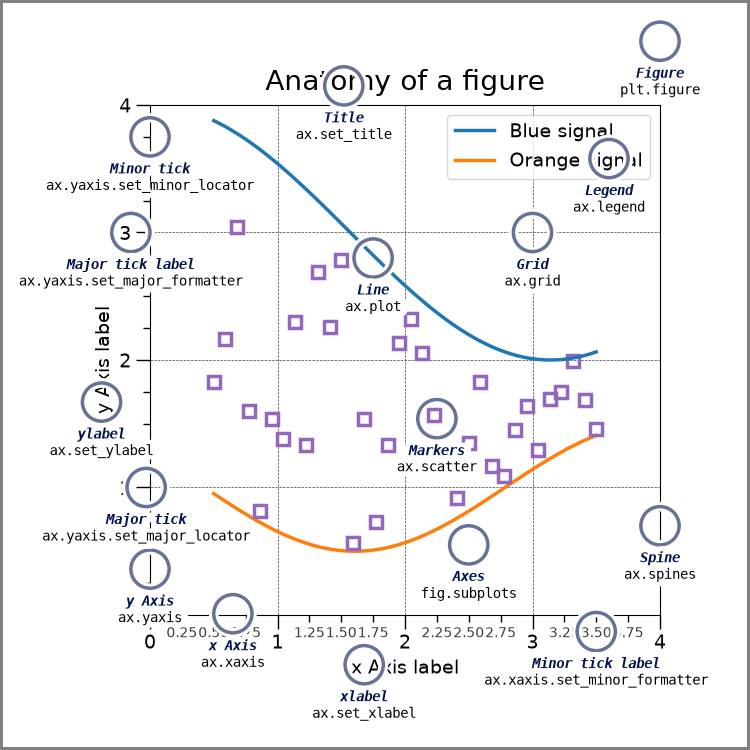

HWRS 564a · Week 5 · Thursday, September 24
Week 5, session 2 of 2
By the end, you will be able to build a complete hydrologic figure from an empty code cell and explain what every line does.
plt.subplots() creates the objects. ax.plot(...) draws into the Axes. Keep those two steps separate and Matplotlib becomes much more predictable.
pyplot is imported as plt by convention; here it is the factory. Add figsize=(8, 4) to subplots to set width and height in inches.

Figure owns
Axes owns
fig, ax = plt.subplots(figsize=(8, 4))
ax.plot(date, discharge)
ax.set(
xlabel="date",
ylabel="discharge (ft³/s)",
title="Sabino Creek daily discharge",
)
plt.show()Read it top to bottom: 1 make, 2 draw, 3 label, 4 show. That four-step recipe is the spine of the entire walkthrough.
Hint
The factory is subplots; the Axes method for an ordered sequence is plot.
ax.plot(date, discharge) # change along an ordered coordinate
ax.scatter(recharge, head_change) # relationship between two variables
ax.bar(month, recharge_total) # compare discrete categories
ax.hist(residual, bins=15) # distribution of one variable| Question | Mark | What it implies |
|---|---|---|
| How did flow change through time? | line | order and continuity matter |
| Does recharge relate to head change? | points | each pair is an observation |
| Which month received more recharge? | bars | categories are distinct |
| Are residuals symmetric? | bins | values form a distribution |
A line says observations have an order and that change between adjacent points is meaningful. Connecting well locations would invent a path with no physical meaning, so independent wells belong in a scatter plot.
ax.plot(date, observed, color="#0C234B", lw=1.5,
label="observed")
ax.plot(date, rolling, color="#AB0520", lw=2.5,
label="30-day mean")color separates the two serieslw controls line widthlabel supplies text for a later legendUse one visual difference for a reason. Extra styling can obscure the information.
The measurements come from different wells. Show the relationship without implying that the wells form a connected path.
Hint
Each x–y pair is an independent well. Use scatter.
ax.set(
xlabel="date", # coordinate
ylabel="depth to water (ft below surface)", # quantity + unit
title="The water table deepened after 2000", # message
)value, result, and plot of discharge make the reader reconstruct answers the author already knows.
Depth below land surface increases downward. A larger number means a deeper water table.
ax.plot(date, depth_to_water_ft)
ax.invert_yaxis()
ax.set_ylabel("depth to water (ft below land surface)")Inverting this axis makes downward movement on the page match downward movement of the water table.
ax.plot(date, daily, color="0.75", lw=0.8, label="daily")
ax.plot(date, rolling, color="#AB0520", lw=2, label="30-day mean")
ax.legend(frameon=False)The legend appears only after artists have label= values.
One line rarely needs a legend because the y-axis label already names it. Two lines need either direct labels or a legend so the visual encoding can be decoded.
Hint
Make the summary line wider than the daily line. Labels need quantity and unit; the final method is legend.
Solution
ax.plot(day, smooth, color="#AB0520", lw=2.5, label="9-day mean")
ax.set(
xlabel="day",
ylabel="discharge (ft³/s)",
title="Smoothing reveals a gradual rise in discharge",
)
ax.legend(frameon=False)The grey line retains daily variation; the heavier red line carries the trend. Both remain visible, but they no longer compete equally for attention.
subplots returns an array when you ask for panelsfig, axes = plt.subplots(1, 2, figsize=(11, 4))
axes[0].plot(date, discharge)
axes[1].hist(discharge, bins=15)axes[0] and axes[1] are ordinary Axes. Everything learned for ax still works; the only new step is selecting a panel.
For vertically aligned time series, use plt.subplots(2, 1, sharex=True). Use sharex=True only when both panels use the same coordinate.
Hint
The panels use the same days, so share the x axis. Ask the Figure to repair spacing with tight_layout().
Solution
fig, axes = plt.subplots(2, 1, figsize=(8, 6), sharex=True)
# ...draw and label both panels...
fig.tight_layout()The bars emphasize rainfall totals in distinct days. The line emphasizes the ordered stream response. One Figure connects the cause and response without forcing unlike units onto one y axis.
dpi=200 gives a crisp raster image for documents and slidesbbox_inches="tight" trims unused margin without clipping labels.png is convenient for screens; .pdf preserves vectors for printSave after every plotting and labeling call so the file matches what you see.
import matplotlib.pyplot as plt
# 1. Prepare the values and coordinates
x = ...
y = ...
# 2. Make the canvas and plotting area
fig, ax = plt.subplots(figsize=(8, 4))
# 3. Draw marks that match the question
ax.plot(x, y, color="#0C234B", lw=1.5)
# 4. State the physical meaning
ax.set(xlabel="...", ylabel="quantity (unit)", title="message")
# 5. Finish
fig.tight_layout()
fig.savefig("figure.png", dpi=200, bbox_inches="tight")
plt.show()You can now build a figure from an empty cell
matplotlib.pyplot as pltfig, ax with plt.subplots()plot, scatter, bar, or histWhat’s due
Next week
Build and verify your first MODFLOW model, then use this same Figure-and-Axes pattern to inspect the simulated head field.
HWRS 564a · Fall 2026